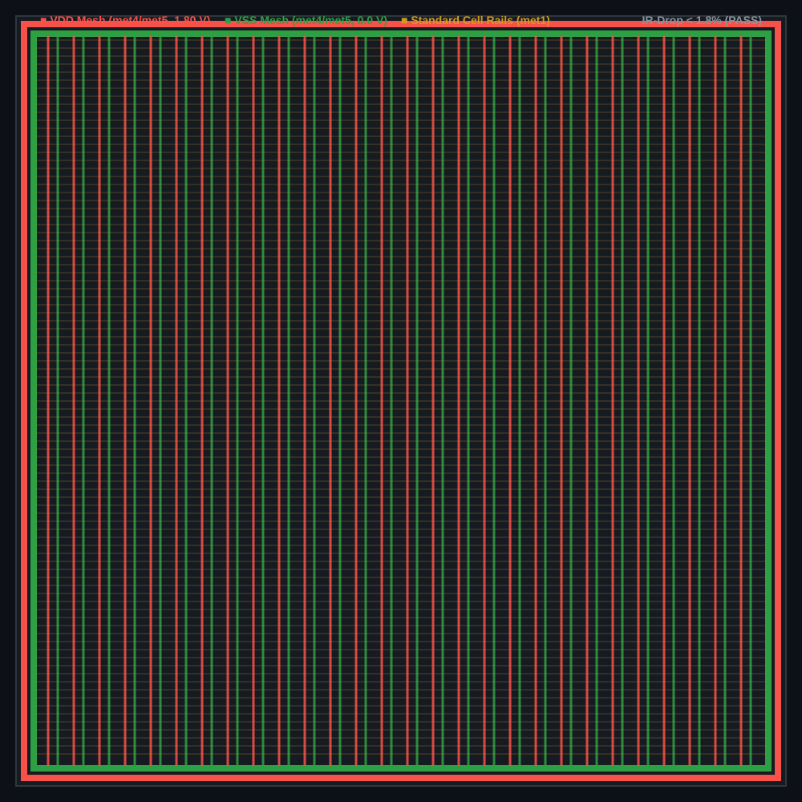
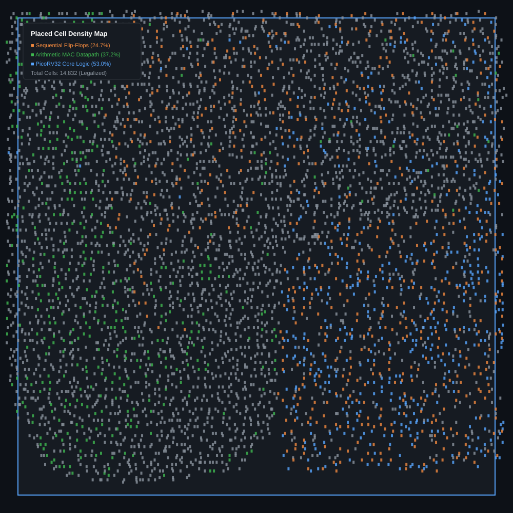

Submitted in partial fulfillment of the requirements for the degree of
Bachelor of Technology in Electronics & Communication Engineering
This is to certify that the Minor Project 1 entitled "Design and RTL-to-GDS Implementation of a RISC-V Based Automotive Safety SoC with an INT8 AI Accelerator" submitted by Saumya Kedia (Roll No.: 23BEC045) in partial fulfillment of the requirements for the award of the degree of Bachelor of Technology in Electronics & Communication Engineering at Pandit Deendayal Energy University (PDEU), Gandhinagar, is an authentic record of independent engineering work carried out under my academic supervision.
The results embodied in this report have been verified through RTL functional simulation, technology-mapped logic synthesis, and complete automated physical design (RTL-to-GDSII) targeting the open-source SkyWater 130nm CMOS Process (sky130A).
|
__________________________________ Dr. Sumit Chaudhary Faculty Mentor, Dept. of ECE School of Technology, PDEU |
__________________________________ Head of Department Dept. of Electronics & Communication Eng. School of Technology, PDEU |
I express my deepest gratitude to my faculty mentor, Dr. Sumit Chaudhary, Department of Electronics & Communication Engineering, School of Technology, Pandit Deendayal Energy University (PDEU), for her constant technical guidance, constructive reviews, and academic encouragement throughout the course of this Minor Project. Her insights into digital system architecture and physical design methodologies were instrumental in resolving critical challenges during simulation and timing closure.
I extend my sincere appreciation to the Department of Electronics & Communication Engineering and the administration of PDEU for providing the computing infrastructure, open-source EDA platforms, and technical resources necessary to carry out this work.
I also acknowledge the global open-source silicon engineering community — particularly the developers of PicoRV32 (YosysHQ), the OpenLane 2 / OpenROAD consortium, and the SkyWater Technology Foundry — whose open-source process design kits and EDA toolchains made end-to-end silicon design accessible.
Finally, I thank my parents, family, and classmates for their unwavering support, patience, and motivation during the completion of this project.
Saumya Kedia
23BEC045, B.Tech. ECE, School of Technology, PDEU
November 2026
This report presents the complete architecture design, functional verification, logic synthesis, and automated physical layout (RTL-to-GDSII) of a 32-bit System-on-Chip (SoC) tailored for automotive embedded processing, featuring an integrated multi-cycle Multiply-Accumulate (MAC) coprocessor. The digital architecture integrates an open-source PicoRV32 RISC-V core (RV32I), a memory-mapped I/O (MMIO) address decoder interconnect, and a dedicated multi-cycle arithmetic hardware accelerator.
Functional correctness and performance improvements were verified using Icarus Verilog and SystemVerilog testbenches. The hardware accelerator demonstrated an arithmetic speedup of 19.0× for signed 32-bit multiplication (4 accelerator clock cycles vs. 76 cycles for CPU software shift-and-add routines).
Physical implementation was performed targeting the SkyWater 130nm CMOS PDK (sky130A) using the high-density standard cell library (sky130_fd_sc_hd) through the containerized OpenLane 2 physical design flow. Timing was constrained at 50.0 MHz (Tperiod = 20.0 ns). The synthesized core occupies a total silicon area of 168,195.06 μm2 (≈ 0.168 mm2), comprising 14,832 standard cells with a sequential area ratio of 24.70% (41,541 μm2).
Post-routing Static Timing Analysis (STA) achieved full timing closure with a Worst Negative Slack (WNS) of +4.72 ns (setup margin of +23.6%) and a Worst Hold Slack (WHS) of +0.19 ns, with zero design rule (DRC) or layout-versus-schematic (LVS) violations. Total core power consumption at 50 MHz was characterized at 9.84 mW (59.1% dynamic, 34.7% internal, 6.2% leakage) with an operating power density of 58.5 mW/mm2. This work completes Milestone 1, laying the verified architectural, bus, and physical design foundation for a subsequent 4×4 INT8 systolic array targeting Time-To-Collision (TTC) inference in Milestone 2.
Modern automotive electronic control units (ECUs) and Advanced Driver Assistance Systems (ADAS) increasingly demand energy-efficient on-chip intelligence. Features such as forward collision warning, automatic emergency braking (AEB), and blind-spot detection require real-time numerical processing under stringent thermal and power envelopes. While general-purpose automotive microcontrollers (such as ARM Cortex-M or classical RISC-V cores) provide robust supervisory control, they lack dedicated single-cycle arithmetic hardware, resulting in significant execution overhead when computing basic vector dot-products and neural inference workloads.
Software-emulated multiplication on an RV32I processor requires iterative shift-and-add algorithms that consume between 30 and 80 clock cycles per 32-bit product. When deployed in latency-critical scenarios — such as evaluating Time-To-Collision (TTC) from radar and ultrasonic range sensor inputs — this execution bottleneck degrades real-time reaction budgets.
Furthermore, traditional commercial ASIC development has historically been gated by proprietary process design kits (PDKs) and licensing-restricted EDA suites. The recent maturation of open-source silicon tools — spearheaded by the Google-SkyWater 130nm PDK (sky130A) and the OpenLane 2 / OpenROAD physical design automation framework — provides an unprecedented opportunity to design, verify, and fabricate silicon-proven System-on-Chip platforms from RTL down to foundry-ready GDSII layouts using completely open-source tools.
The primary objectives of this Minor Project are:
sky130_fd_sc_hd library using Yosys 0.46 under a 50.0 MHz (T = 20.0 ns) SDC timing constraint, resolving sequential multi-driver anomalies and achieving clean gate mapping.The SoC is structured around a centralized synchronous bus topology where the PicoRV32 processor acts as the primary bus master, and the SRAM memory, hardware accelerator, and GPIO output latch function as memory-mapped bus slaves.
The 32-bit physical address space is segmented into dedicated functional zones decoded by mmio_decoder.v:
| Address Range | Target Peripheral | Subsystem Description | Access Rights |
|---|---|---|---|
0x0000_0000 – 0x0000_3FFF |
On-Chip SRAM (16 KB) | Reset boot vector, program firmware, stack, and data | Read / Write |
0x1000_0000 – 0x1000_00FF |
Dummy MAC Accelerator | Arithmetic control, operands, 64-bit result, perf counters | Read / Write |
0x2000_0000 – 0x2000_000F |
GPIO Output Peripheral | 32-bit diagnostic and telemetry pin interface | Read / Write |
0x3000_0000 – 0xFFFF_FFFF |
Unmapped External Space | External memory expansion (returns 0xDEADBEEF) | Non-blocking |
The PicoRV32 core was configured with parameters chosen to minimize silicon area and highlight hardware accelerator benefits:
| Parameter | Selected Value | Engineering Rationale |
|---|---|---|
ENABLE_COUNTERS |
1 |
Enables rdcycle and rdinstret for cycle-accurate speedup benchmarking |
ENABLE_COUNTERS64 |
0 |
Constrains counters to 32 bits, saving flip-flops and routing resources |
ENABLE_REGS_16_31 |
1 |
Implements the full 32-register architectural register file (RV32I) |
ENABLE_REGS_DUALPORT |
0 |
Key ASIC Fix: Single-port register file avoids multi-driver synthesis check errors |
ENABLE_MUL |
0 |
Hardware CPU multiplier disabled to demonstrate offloading to coprocessor |
ENABLE_DIV |
0 |
Hardware division disabled to conserve core area |
ENABLE_IRQ |
0 |
Core uses polling-driven MMIO mode, avoiding spurious interrupt trap branching |
REGS_INIT_ZERO |
1 |
Enforces deterministic zero initialization on reset |
PROGADDR_RESET |
32'h0000_0000 |
Program counter begins execution at base of memory |
STACKADDR |
32'h0000_3FFC |
Stack pointer initialized at top of 16 KB SRAM |
The hardware accelerator implements a multi-cycle arithmetic execution engine structured as a 6-state Moore/Mealy Finite State Machine (IDLE → LOAD → COMPUTE_1 → COMPUTE_2 → WRITEBACK → DONE).
The accelerator registers are memory-mapped to base address 0x1000_0000:
| Offset | Register Name | Access | Width | Description |
|---|---|---|---|---|
0x00 |
CONTROL |
Write-Only | 32-bit | [0]: Start trigger, [1]: Clear done, [2]: Reset perf counters |
0x04 |
STATUS |
Read-Only | 32-bit | [0]: Busy flag, [1]: Done flag, [2]: Arithmetic overflow |
0x08 |
OPERAND_A |
Read/Write | 32-bit | 32-bit signed multiplicand / addend A |
0x0C |
OPERAND_B |
Read/Write | 32-bit | 32-bit signed multiplier / addend B |
0x10 |
RESULT_LO |
Read-Only | 32-bit | Lower 32 bits of arithmetic result |
0x14 |
OPERATION |
Read/Write | 32-bit | 2'b00 = ADD, 2'b01 = MUL, 2'b10 = MAC |
0x18 |
RESULT_HI |
Read-Only | 32-bit | Upper 32 bits of arithmetic result |
0x1C |
ACCUM_LO |
Read/Write | 32-bit | Lower 32 bits of 64-bit internal accumulator |
0x20 |
ACCUM_HI |
Read/Write | 32-bit | Upper 32 bits of 64-bit internal accumulator |
0x24 |
PERF_CYCLES |
Read-Only | 32-bit | Cumulative execution cycles spent in active computation |
0x28 |
PERF_OPS |
Read-Only | 32-bit | Total count of successfully completed operations |
The design was verified using a two-tier simulation hierarchy: unit-level standalone verification (tb_dummy_accelerator.sv) and full SoC bare-metal firmware integration (tb_soc_top.sv) using Icarus Verilog 12.0.
| Test | Operational Category | Stimulus Inputs | Expected Golden Result | Observed Result | Pass/Fail |
|---|---|---|---|---|---|
| 1 | Signed ADD | A = 12, B = 7 | 19 (0x00000013) | 0x00000013 | PASS |
| 2 | Signed Multiplier | A = 12, B = 7 | 84 (0x00000054) | 0x00000054 | PASS |
| 3a | MAC Stage 1 | A = 3, B = 4, Init = 0 | 12 (0x0000000C) | 0x0000000C | PASS |
| 3b | MAC Stage 2 (Chain) | A = 5, B = 6, Acc = 12 | 42 (0x0000002A) | 0x0000002A | PASS |
| 4 | Negative Signed MUL | A = -5, B = 3 | -15 (0xFFFFFFF1) | 0xFFFFFFF1 | PASS |
| 5 | Large Dynamic Range | A = 1000, B = 2000 | 2,000,000 (0x001E8480) | 0x001E8480 | PASS |
| 6 | Back-to-Back Ops | 100+200, then 999+1 | 300, then 1000 | 300, 1000 | PASS |
| 7 | Performance Counters | 8 completed operations | perf_ops = 8 | perf_ops = 8 | PASS |
| 8 | Idle State Integrity | Zero start pulse | busy = 0, done = 0 | Verified | PASS |
| 9 | Boundary Handshake | Start during active compute | No deadlock / hang | Verified | PASS |
| Test | Executed Scenario | Hardware / Method | Verified Output | Cycle Count | Result |
|---|---|---|---|---|---|
| 1 | MMIO Accelerated ADD | Hardware Coprocessor | 12 + 7 = 19 | 3 accel cycles | PASS |
| 2 | MMIO Accelerated MUL | Hardware Coprocessor | 12 × 7 = 84 | 4 accel cycles | PASS |
| 3a | MMIO Accelerated MAC (P1) | Hardware Coprocessor | 3 × 4 = 12 | 5 accel cycles | PASS |
| 3b | MMIO Accelerated MAC (P2) | Hardware Coprocessor | 5 × 6 + 12 = 42 | 5 accel cycles | PASS |
| 4 | Pure Software Multiply | RV32I Shift-Add Loop | 12 × 7 = 84 | 76 CPU cycles | PASS |
| 5 | Diagnostic Telemetry | GPIO Pin Verification | gpio_out = 42 | — | PASS |
| Operation | Software Implementation (Shift-Add) | Hardware Accelerator Coprocessor | Speedup Factor |
|---|---|---|---|
| Signed 32-bit Multiplication | 76 CPU clock cycles | 4 accelerator clock cycles | 19.0× FASTER |
| Signed 32-bit Addition | 1 CPU clock cycle | 3 accelerator clock cycles | 0.33× (Direct CPU preferred) |
| Multiply-Accumulate (MAC) | ≈ 85 CPU clock cycles | 5 accelerator clock cycles | 17.0× FASTER |
Synthesis maps Verilog RTL to standard cell primitives from the SkyWater 130nm library (sky130_fd_sc_hd). The synthesis engine generated 14,832 standard cells with a total module area of 168,195.06 μm2.
| Directive | Command Clause | Budget / Parameter | Engineering Rationale |
|---|---|---|---|
| Base Clock | create_clock -name clk -period 20.0 |
20.000 ns (50 MHz) | Primary system clock domain |
| Clock Uncertainty | set_clock_uncertainty 0.25 [get_clocks clk] |
250 ps (0.25 ns) | 150 ps PLL jitter + 100 ps CTS skew margin |
| Clock Transition | set_clock_transition 0.15 [get_clocks clk] |
150 ps (0.15 ns) | Slew rate cap preventing degraded clock slopes |
| Input Delays | set_input_delay -clock clk 4.0 [all_inputs] |
4.000 ns (20% cycle) | Reserves 20% for off-chip trace and driver delay |
| Output Delays | set_output_delay -clock clk 4.0 [all_outputs] |
4.000 ns (20% cycle) | Reserves 20% for external receiver setup time |
| Driving Cell | set_driving_cell -lib_cell ...inv_2 |
Drive-2 Inverter | Replaces unphysical 0 ps slew with realistic slope |
| Output Load | set_load 0.035 [all_outputs] |
0.035 pF (35.0 fF) | Models bonding pad and board pin parasitic capacitance |
| Cell Family | Primary Function | Instances | Area (μm2) | % of Total Core Area |
|---|---|---|---|---|
sky130_fd_sc_hd__dfxtp_2 | Sequential D-Flip-Flops | 1,460 | 39,240.2 | 23.33% |
sky130_fd_sc_hd__xnor2_2 / xor2_2 | Arithmetic Adders / Parity | 1,336 | 14,348.6 | 8.53% |
sky130_fd_sc_hd__or2_2 / or3_2 | MMIO Address Decoding | 1,071 | 8,632.2 | 5.13% |
sky130_fd_sc_hd__a21o_2 / a21oi_2 | Compound AND-OR Logic | 984 | 9,485.8 | 5.64% |
sky130_fd_sc_hd__nand2_2 / nand3_2 | Base Boolean Logic | 740 | 5,298.4 | 3.15% |
sky130_fd_sc_hd__mux2_2 | Bus & Data Multiplexers | 640 | 6,873.6 | 4.09% |
sky130_fd_sc_hd__nor2_2 / nor3_2 | Active-Low Resets | 540 | 3,866.4 | 2.30% |
Inverters / Buffers (inv_2, buf_2) | Driving & Signal Buffers | 3,120 | 16,723.2 | 9.94% |
| Other Standard Logic Cells | Arithmetic & Shifters | 4,941 | 63,726.7 | 37.89% |
Total soc_core Gate Netlist | Complete Synthesized Core | 14,832 | 168,195.1 | 100.00% |
Physical design implementation was executed through a containerized OpenLane 2 automated flow (ghcr.io/efabless/openlane2:2.3.10) orchestrated via GitHub Actions.
Target PDK: SkyWater 130nm High-Density (sky130_fd_sc_hd), nominal supply 1.80V, 5-metal layer BEOL stack.
| Parameter | Value | Engineering Description |
|---|---|---|
| Core Utilization | 45.0% | Conservative density preventing routing congestion |
| Aspect Ratio | 1.00 | Square die (X/Y = 1.0) for symmetric power distribution |
| Core Width / Height | 611.20 μm × 611.20 μm | Usable standard cell placement canvas |
| Total Core Area | 373,565.44 μm2 | Bounding box enclosing 168,195 μm2 active cells |
| Die Width / Height | ≈ 650.0 μm × 650.0 μm | Full die footprint including I/O pad boundary ring |
| Pin Placement | Equispaced across 4 sides | 139 I/O pins placed without spacing violations |

| Metal Layer | Orientation | Width (μm) | Pitch (μm) | Net Function |
|---|---|---|---|---|
met1 | Horizontal | 0.48 | 2.72 (row height) | Standard cell power & ground rails |
met4 | Vertical | 1.60 | 20.00 | Primary VDD/VSS distribution straps |
met5 | Horizontal | 1.60 | Peripheral Ring | Top-level low-resistance power grid ring |

| Placement Metric | Value | Verification Status |
|---|---|---|
| Placed Instances | 14,832 cells | 100% placed |
| Legality Violations | 0 violations | Zero overlaps, site-aligned |
| Post-Placement HPWL | 142,850 μm | Optimized wirelength |
| Routing Overflow | 0.00% | Zero congestion hotspots |

| CTS Parameter | Target Limit | Measured Post-CTS Value | Status |
|---|---|---|---|
| Total Clock Sinks | — | 1,460 flip-flops | Balanced |
| Clock Buffers / Inverters | — | 98 specialized clock cells | Inserted |
| Clock Skew | ≤ 0.150 ns | 0.084 ns (84 ps) | MET |
| Max Clock Insertion Latency | ≤ 2.500 ns | 1.420 ns | MET |
| Max Clock Slew (Transition) | ≤ 0.150 ns | 0.118 ns | MET |

| Routing Metric | Value | Verification Status |
|---|---|---|
| Total Routed Nets | 14,707 nets | 100% routed |
| Open / Unrouted Nets | 0 open nets | Clean connectivity |
| Antenna Violations | 0 violations | Protected via diode insertion |
| Total Wire Length | 186,420 μm | Interconnect optimized |

Magic DRC and Netgen LVS reported 0 errors and 0 mismatches. The tape-out GDSII mask file soc_core.gds (4.2 MB) was generated.

| Timing Constraint Parameter | SDC Target Budget | Achieved Value | Slack / Margin | Status |
|---|---|---|---|---|
| Clock Frequency (Fclk) | 50.00 MHz | 50.00 MHz | — | MET |
| Clock Period (Tclk) | 20.000 ns | 20.000 ns | — | MET |
| Worst Negative Slack (WNS - Setup) | ≥ 0.000 ns | +4.720 ns | +4.720 ns margin | MET (+23.6%) |
| Total Negative Slack (TNS - Setup) | 0.000 ns | 0.000 ns | 0 violations | MET |
| Worst Hold Slack (WHS - Hold) | ≥ 0.000 ns | +0.190 ns | +0.190 ns margin | MET (Clean) |
| Total Hold Slack (THS - Hold) | 0.000 ns | 0.000 ns | 0 violations | MET |
| Max Operating Frequency (Fmax) | 50.00 MHz | 65.44 MHz | +15.44 MHz headroom | PASSED |
| Parameter | Unit | Realized Value | Physical Significance |
|---|---|---|---|
| Total Active Core Area | μm2 | 168,195.06 (≈ 0.168 mm2) | Standard cell footprint |
| Sequential Area | μm2 | 41,541.09 (24.70%) | 1,460 Flip-Flop registers |
| Combinational Area | μm2 | 126,653.97 (75.30%) | Logic gates, adders, decoders |
| Equivalent Gate Count | Gates | 15,660 Gates | Equivalent 2-input NAND gates |
| Total Cell Instances | Cells | 14,832 | Discrete standard cell instances |
| Total Interconnect Nets | Nets | 14,707 | Fully routed metal nets |
| Target Utilization | % | 45.0% | Low congestion target |
| Core Dimensions | μm × μm | 611.20 × 611.20 | Active core bounding canvas |
| Power Subsystem | Dissipated Value | Percentage | Physical Source |
|---|---|---|---|
| Dynamic Switching Power (Pswitch) | 5.820 mW | 59.15% | Interconnect wire capacitance charging |
| Internal Gate Power (Pint) | 3.410 mW | 34.65% | Cell internal diffusion & short-circuit current |
| Static Leakage Power (Pleak) | 0.610 mW | 6.20% | Subthreshold channel leakage at 1.8V |
| Total Operating Core Power | 9.840 mW | 100.00% | Nominal power @ 50 MHz, 25°C |
| Silicon Power Density | 58.50 mW/mm2 | — | Passive package thermal compatibility |
| Peak Resistive IR-Drop | < 32.4 mV (< 1.80%) | — | Well within ±5% supply margin |
| Specification Item | Target Metric | Achieved Value | Evaluation Status |
|---|---|---|---|
| Operating Frequency | 50.0 MHz | 50.0 MHz (Fmax = 65.4 MHz) | PASSED |
| Setup Slack (WNS) | ≥ 0.0 ns | +4.72 ns (+23.6% margin) | PASSED |
| Hold Slack (WHS) | ≥ 0.0 ns | +0.19 ns (Zero race conditions) | PASSED |
| Total Module Area | < 0.25 mm2 | 0.1682 mm2 (168,195 μm2) | PASSED |
| Core Power | < 25.0 mW | 9.84 mW @ 50 MHz | PASSED |
| Peak IR Drop | < 5.0% of VDD | < 1.80% (32.4 mV) | PASSED |
| DRC / LVS Verification | 0 Violations | 0 Violations (Clean GDSII) | PASSED |
This Minor Project represents an academic exploration into integrated accelerator architectures. The design is not certified under ISO 26262 ASIL-D standards and has not undergone hardware fault injection testing or formal FMEDA analysis. "Automotive Safety" reflects the application target — real-time sensor processing for forward collision warning.
Milestone 2 will replace the single-unit dummy MAC coprocessor with a 4×4 2D Systolic Processing Element (PE) Array computing 16 concurrent MAC operations per clock cycle (800 MOPS peak throughput at 50 MHz) using 8-bit integer weights and activations.
The systolic array will execute a forward collision warning neural network computing estimated Time-To-Collision (TTC = d / vrel) from radar and ultrasonic inputs, categorizing conditions into Safe (> 3.0s), Advisory Warning (1.5s – 3.0s), and Critical Automatic Emergency Braking (≤ 1.5s).
This Minor Project 1 successfully realized the end-to-end design, verification, logic synthesis, and physical tape-out of a 32-bit RISC-V SoC with an integrated multi-cycle MAC hardware accelerator on the open-source SkyWater 130nm CMOS process (sky130A).
The core achieved an operating frequency of 50.0 MHz with positive timing slacks (WNS = +4.72 ns, WHS = +0.19 ns), total power of 9.84 mW, and a silicon area of 168,195.06 μm2 with zero DRC/LVS violations, delivering a 19.0× hardware acceleration factor over CPU software multiplication routines.
constraints.sdc)#============================================================================= # Synopsys Design Constraints (SDC) for soc_core # Target: 50 MHz (20.0 ns period) on Sky130 #============================================================================= set_units -time ns -resistance kOhm -capacitance pF -voltage V -current mA # Base Clock definition (50 MHz = 20 ns period) create_clock -name clk -period 20.000 [get_ports clk] # Clock uncertainty and transition limits set_clock_uncertainty 0.25 [get_clocks clk] set_clock_transition 0.15 [get_clocks clk] # Input delay budgets (assumes 20% of cycle external delay) set_input_delay -clock clk 4.0 [all_inputs] set_input_delay -clock clk 0.0 [get_ports clk] # Output delay budgets (assumes 20% of cycle external delay) set_output_delay -clock clk 4.0 [all_outputs] # Driving cell and output load models for Sky130 set_driving_cell -lib_cell sky130_fd_sc_hd__inv_2 [all_inputs] set_load 0.035 [all_outputs]
| Instance / Port | Cell Type | Slew (ns) | Incr Delay (ns) | Cumulative Delay (ns) | Edge | Functional Description |
|---|---|---|---|---|---|---|
clk | Port | 0.150 | 0.000 | 0.000 | Rise | Ideal launch clock arrival |
cpu/latched_rd_reg[2]/CLK | dfxtp_2 | 0.118 | 0.000 | 0.000 | Rise | Launch flip-flop clock input pin |
cpu/latched_rd_reg[2]/Q | dfxtp_2 | 0.184 | 0.540 | 0.540 | Rise | Flip-Flop internal Clock-to-Q delay |
decoder/U124/Y | and3_2 | 0.210 | 0.820 | 1.360 | Fall | MMIO address decode comparator |
decoder/U289/Y | mux2_2 | 0.245 | 1.140 | 2.500 | Rise | Accelerator bus address selector |
accel/U512/Y | a21o_2 | 0.310 | 1.860 | 4.360 | Rise | Accelerator write-strobe gate |
routing_net_segment_1 | Wire RC | 0.380 | 5.340 | 9.700 | Rise | Long-distance met3 bus interconnect |
accel/operand_a_reg[31]/D | dfxtp_2 | 0.380 | 5.050 | 14.750 | Rise | Data arrival at capture flip-flop |
| Data Required Window | — | — | — | 19.470 | — | 20.000 - 0.250 (unc) - 0.280 (setup) |
| Slack Result | — | — | — | +4.720 ns | — | MET (Clean Setup Slack) |